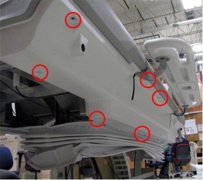

- 00000018WIA3045A030GYZ
- id_123748761.23
- Oct 22, 2024 4:05:15 PM
Replacing the Touch-n-Go (TnG) strip and side bumper
Prerequisites
| Personnel requirements | |||
|---|---|---|---|
| Required persons | Preliminary requirements | Procedure | Finalization |
| 1 | - | 75 minutes | - |
| Tools and test equipment | |||
|---|---|---|---|
| Item | Quantity | Part number | Manufacturer |
| 5/32 inch Allen Wrench | 1 | - | - |
| 3/8 inch Open-End Wrench | 1 | - | - |
| Nonferrous Medium Phillips Head Screwdriver | 1 | - | - |
| Replacement parts | |||
|---|---|---|---|
| Item | Quantity | Part number | Manufacturer |
| Front Right-Hand TnG Assembly | 1 | See FRU manual. | - |
| Armboard TnG Assembly | 1 | See FRU manual. | - |
| Rear Right-Hand TnG Assembly | 1 | See FRU manual. | - |
| Front Left-Hand TnG Assembly | 1 |
See FRU manual. | - |
| Armboard TnG Assembly | 1 | See FRU manual. | - |
| Rear Left-Hand TnG Assembly | 1 | See FRU manual. | - |
| Front Right-Hand Side Bumper | 1 | See FRU manual. | - |
| Armboard Bumper (use for right-hand or left-hand side) | 1 | See FRU manual. | - |
| Rear Right-Hand Side Bumper | 1 | See FRU manual. | - |
| Rear Right-Hand Side Bumper for OR-Compatible MR Table | 1 | See FRU manual. | - |
| Front Left-Hand Side Bumper | 1 | See FRU manual. | - |
| Rear Left-Hand Side Bumper | 1 | See FRU manual. | - |
| Rear Left-Hand Side Bumper for OR-Compatible MR Table | 1 | See FRU manual. | - |
About this task
On each side of the patient table along the top edge, there are Touch and Go (TnG) strips that run the length of the table. A closer look at the TnG strips internally shows that each side is made up of three individual strips connected by jumpers. If one of the strips fails, replace only that specific strip. In other words, you do not have to replace the entire side. Be certain of which strip you are replacing because each one has a separate part number. See the Table 1 section for all part numbers.
This procedure also covers replacing the table side bumpers. The convenience of replacing any of the three side bumpers on either side of the table is that a TnG strip is contained within a side bumper. Therefore, whether you need to replace a TnG strip or a side bumper, you need to remove the TnG strip from its respective side bumper.
Procedure
- At the front of the table, remove the front bottom cover (4 screws).
Figure 2. Front bottom cover 
- Note Side cover removal: Determine which TnG strip or side bumper to replace, and then pay attention to the following:On the bottom right or left side of the table, remove the appropriate side cover screws and then slide the side cover down.
- If replacing the front TnG strip or side bumper, remove the front table side cover (4 screws).
- If replacing the middle TnG strip or side bumper, remove both front and rear table side covers (8 screws).
- If replacing the rear TnG strip or side bumper, remove the rear table side cover (4 screws).
Figure 4. Side cover, bottom side screws 
Figure 5. Side cover, bottom side screws 